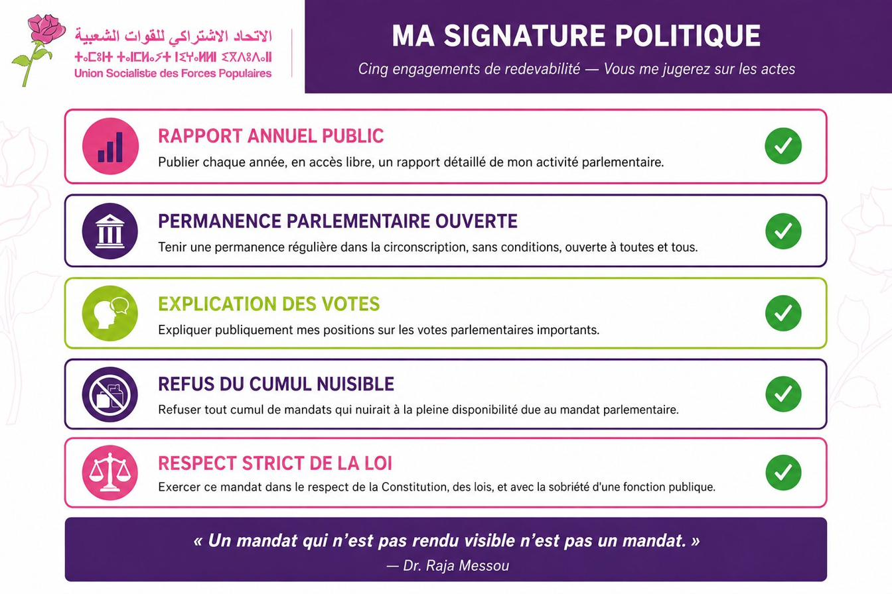

صفحة دائمة، لا انتخابية: تقارير النشاط، التصويتات المُفسَّرة، المداومات، الملفات المتابَعة، الأجوبة على المواطنين.
مُحدَّثة بانتظام. أي تناقض؟ بلِّغونا.
التصنيف حسب الحي: الموضوع، الحالة، الإجراء، التاريخ.

تقارير ثلاثية، تقارير، تركيبات حسب الحي.
12 مداومة · 8 أحياء · 47 شكاية · 19 ملفاً محالاً · 6 مداخلات.
تحميل (PDF)المساءلة ليست شعاراً: إنها منهج. هذا الموقع مُصمَّم لجعلها مقروءة، دائمة، وقابلة للتحقق.
بلِّغ عن تناقض